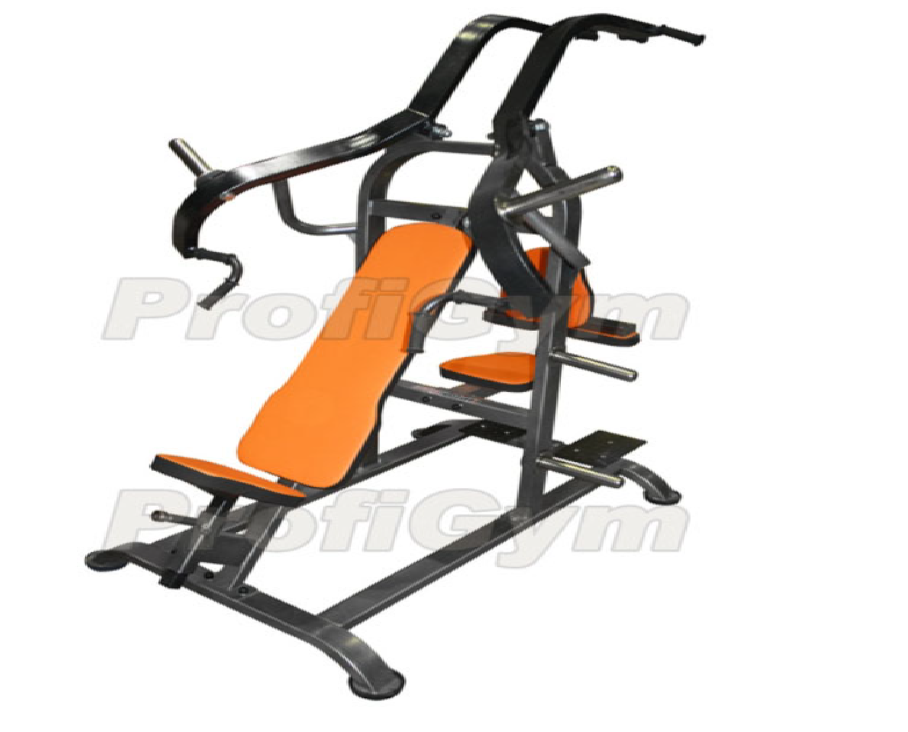

ТРЕНАЖЕР «ХАММЕР» ДЛЯ ГРУДИ И СПИНЫ
Описание
Данный тренажер является спортивным станком, который имеет две стороны – для проработки мышц груди и спины. Для тренировки грудных мышц спортсмену необходимо лечь на наклонную скамью, взяться за специальные ручки и выполнять жим от груди в наклоне. Проработка широчайших мышц спины осуществляется сидя, корпус должен быть зафиксирован опорной подушкой и валиками. Дальше атлет должен тянуть платформу вниз, держась при этом за рукоятки. Лопатки должны быть сведены до упора.
Характеристики товара
- Рама произведена из профильной трубы, изготовленной из стали, с прямоугольным сечением 8 х 4 см.
- Фурнитура из пластика отсутствует.
- Элементы, которые подвергаются трению, обработаны составом из хрома и никеля.
- Хваты и рукоятки хромированные.
- Подвижные элементы оснащены шариковыми подшипниками, которые не требуют обслуживания.
- В качестве покрытия используется порошковое напыление:
- Рама выполнена в цвете «белый глянец»;
- Некоторые элементы окрашены в цвет «серебристо-черный антик».
- Отягощение – тренировочные блины, которые имеют диаметр посадочного отверстия 51 мм (не входят в комплект).
- Материалы мягких деталей:
- Винилискожа;
- ПВВ плотностью 140 кг/куб.м;
- Фанера, которая усилена сталью (3 мм).
- В качестве опор используются вибропоглощающие подпятники из резины, которые имеют следующие размеры: диаметр 120 мм, толщину 20 мм. Также оборудование ProfiGym можно прикрепить к полу за счет отверстий в ножках.
Изображение товара
